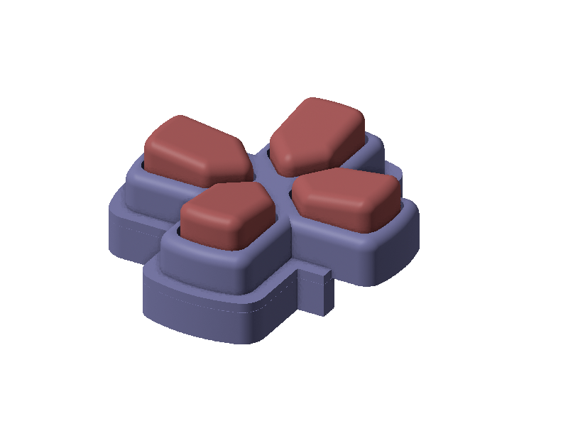
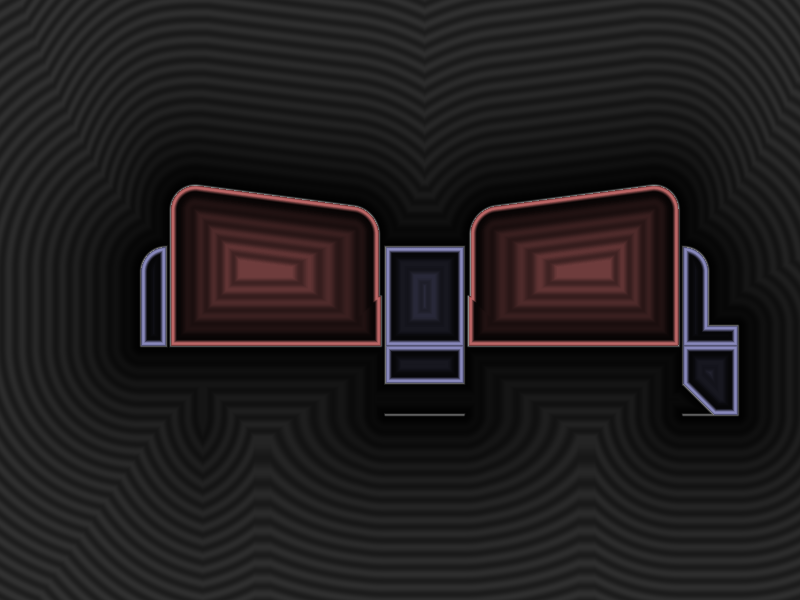
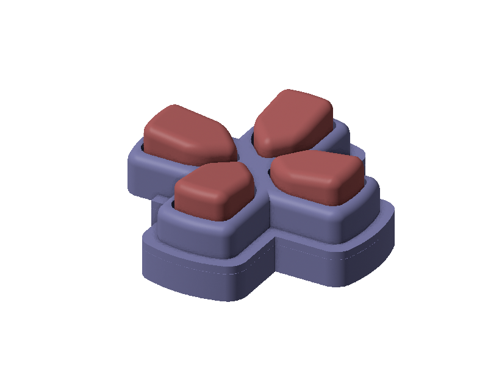

steam_deck_dpad
Drafted with AI, not yet reviewed
by Reimods/steam_deck_dpad.scadPrintables
mixed steam_deck_dpad.keycap: the buttons' outline is a pentagon of points, shrunk by points::miter_offset
sdf-native steam_deck_dpad_sdf.keycap: the buttons' outline is the planes that bound it
Replacement Steam Deck d-pad: a cross in a circle, rounded on top, with a rim and a support underneath, and four slanted buttons that sit in it on the console’s domes.
The Steam Deck is Valve’s; this part is not made or endorsed by Valve.
Ported from src/mods/steam_deck_dpad.scad. Differences:
- Minkowski sums with a hemisphere are rims rounded on top only, or an offset cut at the base; the cross’s and the buttons’ corners, opened with offset(-r) before them in the original, are rounded where their straight sides meet the circle by intersection_round, an elliptic arc rather than a circular one off a right angle.
- The support’s cut-out, a projection of the buttons’ cutters in the original, is their profiles.
- Circles are round: the original’s are 96-gons, the hemispheres 24-gons.
- Compared with the original: within 0.20 mm, at the rim’s corners.


Rewritten with fields
Replacement Steam Deck d-pad, steam_deck_dpad.keycap with its buttons’ outline drawn as fields: the pentagon’s sides are planes as distances, where steam_deck_dpad.keycap shrinks a pentagon of points.

steam_deck_dpad.keycap mixed

steam_deck_dpad_sdf.keycap sdf-nativesteam_deck_dpad.keycap |
steam_deck_dpad_sdf.keycap |
|
|---|---|---|
| Nodes | 662 | 460 |
| Shaded render, CPU-s | 2.1 | 1.9 |
| Export at 10 cells per mm, CPU-s | 63 | 59 |
- Max deviation: 0.24 mm at the buttons’ corners that turn by 45 degrees
- Trade-off: the port’s pentagon is convex, which keycap already draws as cheaply as planes, so the rewrite saves a tenth of the render and a twentieth of the export, and gives up the circular rounds at two of each button’s corners.
Files
Source
steam_deck_dpad.keycap
// Replacement Steam Deck d-pad: a cross in a circle, rounded on top, with // a rim and a support underneath, and four slanted buttons that sit in it // on the console's domes. // // The Steam Deck is Valve's; this part is not made or endorsed by Valve. // // Ported from src/mods/steam_deck_dpad.scad. Differences: // - Minkowski sums with a hemisphere are rims rounded on top only, or an // offset cut at the base; the cross's and the buttons' corners, opened // with offset(-r) before them in the original, are rounded where their // straight sides meet the circle by intersection_round, an elliptic arc // rather than a circular one off a right angle. // - The support's cut-out, a projection of the buttons' cutters in the // original, is their profiles. // - Circles are round: the original's are 96-gons, the hemispheres 24-gons. // idiom mixed: the buttons' outline is a pentagon of points, shrunk by points::miter_offset import "keycap/points" as points; // --- Parameters --- const DPAD_WIDTH = 8.0; const DPAD_DIAMETER = 23.0; const DPAD_THICKNESS = 4.0; const DPAD_RIM_WIDTH = 1.2; const DPAD_RIM_THICKNESS = 0.8; const DPAD_RIM_LEFT_REDUCTION = 4.0; const DPAD_ROUNDING = 1.0; const BUTTON_HEIGHT = 6.5; const BUTTON_GAP = 2.0; const BUTTON_SLANT = 7.5; const BUTTON_RIM_WIDTH = 0.6; const BUTTON_RIM_HEIGHT = 2.0; const BUTTON_ROUNDING = 1.0; const BUTTON_TOLERANCE = 0.2; const DOME_DISTANCE = 16.0; const DOME_RELAXED_HEIGHT = 2.8; const DOME_RADIUS1 = 3.75; const DOME_RADIUS2 = 2.5; const PIN_HEIGHT = 1.3; const PIN_RADIUS = 2.5; const E = 0.01; // --- Profiles --- // A button's outline, on +X: a bar from the circle in to a point, with a // diamond's tip, `grow` wider on each side and twice that shorter, as the // rim's is. The bar and the diamond make one convex pentagon. fn button_points(grow) { let bx = global::DPAD_DIAMETER / 2.0 - global::DPAD_ROUNDING - global::BUTTON_GAP * SQRT_2 - grow * 2.0; let by = global::DPAD_WIDTH - global::DPAD_ROUNDING * 2.0 + grow * 2.0; let left = global::DOME_DISTANCE / 2.0 - bx / 2.0; let right = global::DOME_DISTANCE / 2.0 + bx / 2.0; [[left - by / 2.0, 0], [left, -by / 2.0], [right, -by / 2.0], [right, by / 2.0], [left, by / 2.0]] } // The pentagon cut by the circle, shrunk by `shrink`, its corners rounded // by `r`. With `r` 0 the corners stay sharp, but where the sides meet // square their field is the exact distance, which an offset rounds as a // Minkowski sum does. fn button_outline(grow, shrink, r) { let corners = points::miter_offset(button_points(grow), -shrink); let pentagon = if r == 0.0 { polygon(corners) } else { rounded_polygon(corners, r) }; pentagon.intersection_round(circle(global::DPAD_DIAMETER / 2.0 - global::DPAD_ROUNDING - shrink), r) } // The button's outline without its rim, opened by the rounding. fn button_opened() { button_outline(0.0, 0.0, global::BUTTON_ROUNDING) } fn button_rim_profile() { button_outline(global::BUTTON_RIM_WIDTH, 0.0, global::BUTTON_ROUNDING) } // The cross in the circle, as two convex bars cut by the circle, each with // its corners opened by `r`. fn body_outline(r) { let c = circle(global::DPAD_DIAMETER / 2.0); // Longer than the circle, so that it alone makes the ends. let long = global::DPAD_DIAMETER * 2.0; let bars = [rect([global::DPAD_WIDTH, long]), rect([long, global::DPAD_WIDTH])]; union(bars.map(|bar| bar.intersection_round(c, r))) } // The rim round the cross, cut straight on the left. fn rim_profile() { let left = -global::DPAD_DIAMETER / 2.0 + global::DPAD_RIM_LEFT_REDUCTION; body_outline(0.0).offset(global::DPAD_RIM_WIDTH).intersection(left - x) } // --- Buttons --- // A button: its outline, shrunk by the tolerance and the rounding, under // a slanted top, grown back by the rounding all round but below; and its // rim at the foot. fn button() { let s = global::BUTTON_ROUNDING; let h = global::BUTTON_HEIGHT - s; let inner = button_outline(0.0, global::BUTTON_TOLERANCE + s, 0.0); let slant = cuboid([global::DPAD_DIAMETER - global::DPAD_ROUNDING * 2.0, global::DPAD_WIDTH, h]) .rotate_y(-global::BUTTON_SLANT) .move([global::DPAD_DIAMETER / 2.0 - global::DPAD_ROUNDING - s, 0, h / 2.0]); // A radius of 0 rounds nothing, and leaves the exact distance to the // edge where the walls meet the top, which the offset rounds; the two // tops meet nearly flat, where max is close to exact. let top = max(z - h, slant); let base = inner.intersection_round(top, 0).offset(s).intersection(-z); let rim = button_rim_profile().offset(-global::BUTTON_TOLERANCE).extrude([0, global::BUTTON_RIM_HEIGHT]); union(base, rim) } // What a button takes out of the d-pad: its opened outline right through, // and its rim's outline from below up past the rim. fn button_cutter() { union( button_opened().extrude(100), button_rim_profile().extrude([-100, global::BUTTON_RIM_HEIGHT + global::BUTTON_TOLERANCE]), ) } // --- D-pad --- fn dpad() { let body = body_outline(global::DPAD_ROUNDING).extrude([0, global::DPAD_THICKNESS], #{round: [0, global::DPAD_ROUNDING]}); let rim = rim_profile().extrude([0, global::DPAD_RIM_THICKNESS]); let support = rim_profile() .difference(union(button_opened(), button_rim_profile()).repeat_polar(4)) .extrude([-global::DOME_RELAXED_HEIGHT, 0]); let floor = -global::DOME_RELAXED_HEIGHT - global::E; let pin = cylinder(global::PIN_RADIUS, [floor, floor + global::PIN_HEIGHT]); let dome = cone([global::DOME_RADIUS1, global::DOME_RADIUS2], [floor, floor + global::DOME_RADIUS1 - global::DOME_RADIUS2]) .move([global::DOME_DISTANCE / 2.0, 0, 0]); union(body, rim, support) .difference(union(button_cutter().move([0, 0, -global::E]), dome).repeat_polar(4)) .difference(pin) } // --- Assembly --- draw_rgb(dpad(), 0.533, 0.533, 0.733); draw_rgb(button().repeat_polar(4), 0.733, 0.4, 0.4);
steam_deck_dpad_sdf.keycap
// Replacement Steam Deck d-pad, steam_deck_dpad.keycap with its buttons' // outline drawn as fields: the pentagon's sides are planes as distances, // where steam_deck_dpad.keycap shrinks a pentagon of points. // // The Steam Deck is Valve's; this part is not made or endorsed by Valve. // // Differences from steam_deck_dpad.keycap: // - Shrinking the buttons moves every side in, keeping the corners sharp, // as points::miter_offset does; intersection_round then rounds them, its // round at the two corners that turn by 45 degrees hg_sdf's, up to // 0.24 mm inside the circular one. // idiom sdf-native: the buttons' outline is the planes that bound it // --- Parameters --- const DPAD_WIDTH = 8.0; const DPAD_DIAMETER = 23.0; const DPAD_THICKNESS = 4.0; const DPAD_RIM_WIDTH = 1.2; const DPAD_RIM_THICKNESS = 0.8; const DPAD_RIM_LEFT_REDUCTION = 4.0; const DPAD_ROUNDING = 1.0; const BUTTON_HEIGHT = 6.5; const BUTTON_GAP = 2.0; const BUTTON_SLANT = 7.5; const BUTTON_RIM_WIDTH = 0.6; const BUTTON_RIM_HEIGHT = 2.0; const BUTTON_ROUNDING = 1.0; const BUTTON_TOLERANCE = 0.2; const DOME_DISTANCE = 16.0; const DOME_RELAXED_HEIGHT = 2.8; const DOME_RADIUS1 = 3.75; const DOME_RADIUS2 = 2.5; const PIN_HEIGHT = 1.3; const PIN_RADIUS = 2.5; const E = 0.01; // --- Profiles --- // A button's outline, on +X: a bar from the circle in to a point, with a // diamond's tip, `grow` wider on each side and twice that shorter, as the // rim's is; cut by the circle, every side moved in by `shrink`, the // corners rounded by `r`. With `r` 0 the corners stay sharp, but where // the sides meet square their field is the exact distance, which an // offset rounds as a Minkowski sum does. fn button_outline(grow, shrink, r) { let bx = global::DPAD_DIAMETER / 2.0 - global::DPAD_ROUNDING - global::BUTTON_GAP * SQRT_2 - grow * 2.0; let half = (global::DPAD_WIDTH - global::DPAD_ROUNDING * 2.0) / 2.0 + grow; let right = global::DOME_DISTANCE / 2.0 + bx / 2.0; let tip = global::DOME_DISTANCE / 2.0 - bx / 2.0 - half; let sides = [ abs(y) - half, x - right, (tip - x + y) / SQRT_2, (tip - x - y) / SQRT_2, hypot(x, y) - (global::DPAD_DIAMETER / 2.0 - global::DPAD_ROUNDING), ]; intersection_round(sides.map(|side| side + shrink), r) } // The button's outline without its rim, opened by the rounding. fn button_opened() { button_outline(0.0, 0.0, global::BUTTON_ROUNDING) } fn button_rim_profile() { button_outline(global::BUTTON_RIM_WIDTH, 0.0, global::BUTTON_ROUNDING) } // The cross in the circle, as two convex bars cut by the circle, each with // its corners opened by `r`. fn body_outline(r) { let c = circle(global::DPAD_DIAMETER / 2.0); // Longer than the circle, so that it alone makes the ends. let long = global::DPAD_DIAMETER * 2.0; let bars = [rect([global::DPAD_WIDTH, long]), rect([long, global::DPAD_WIDTH])]; union(bars.map(|bar| bar.intersection_round(c, r))) } // The rim round the cross, cut straight on the left. fn rim_profile() { let left = -global::DPAD_DIAMETER / 2.0 + global::DPAD_RIM_LEFT_REDUCTION; body_outline(0.0).offset(global::DPAD_RIM_WIDTH).intersection(left - x) } // --- Buttons --- // A button: its outline, shrunk by the tolerance and the rounding, under // a slanted top, grown back by the rounding all round but below; and its // rim at the foot. fn button() { let s = global::BUTTON_ROUNDING; let h = global::BUTTON_HEIGHT - s; let inner = button_outline(0.0, global::BUTTON_TOLERANCE + s, 0.0); let slant = cuboid([global::DPAD_DIAMETER - global::DPAD_ROUNDING * 2.0, global::DPAD_WIDTH, h]) .rotate_y(-global::BUTTON_SLANT) .move([global::DPAD_DIAMETER / 2.0 - global::DPAD_ROUNDING - s, 0, h / 2.0]); // A radius of 0 rounds nothing, and leaves the exact distance to the // edge where the walls meet the top, which the offset rounds; the two // tops meet nearly flat, where max is close to exact. let top = max(z - h, slant); let base = inner.intersection_round(top, 0).offset(s).intersection(-z); let rim = button_rim_profile().offset(-global::BUTTON_TOLERANCE).extrude([0, global::BUTTON_RIM_HEIGHT]); union(base, rim) } // What a button takes out of the d-pad: its opened outline right through, // and its rim's outline from below up past the rim. fn button_cutter() { union( button_opened().extrude(100), button_rim_profile().extrude([-100, global::BUTTON_RIM_HEIGHT + global::BUTTON_TOLERANCE]), ) } // --- D-pad --- fn dpad() { let body = body_outline(global::DPAD_ROUNDING).extrude([0, global::DPAD_THICKNESS], #{round: [0, global::DPAD_ROUNDING]}); let rim = rim_profile().extrude([0, global::DPAD_RIM_THICKNESS]); let support = rim_profile() .difference(union(button_opened(), button_rim_profile()).repeat_polar(4)) .extrude([-global::DOME_RELAXED_HEIGHT, 0]); let floor = -global::DOME_RELAXED_HEIGHT - global::E; let pin = cylinder(global::PIN_RADIUS, [floor, floor + global::PIN_HEIGHT]); let dome = cone([global::DOME_RADIUS1, global::DOME_RADIUS2], [floor, floor + global::DOME_RADIUS1 - global::DOME_RADIUS2]) .move([global::DOME_DISTANCE / 2.0, 0, 0]); union(body, rim, support) .difference(union(button_cutter().move([0, 0, -global::E]), dome).repeat_polar(4)) .difference(pin) } // --- Assembly --- draw_rgb(dpad(), 0.533, 0.533, 0.733); draw_rgb(button().repeat_polar(4), 0.733, 0.4, 0.4);